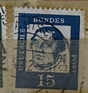
| SOURCE | TITLE| IMAGE MATCH | click to source page |
| www.ebay.com | Germany - 1961 - 15Pfg - Famous Germans - Martin Luther ... | 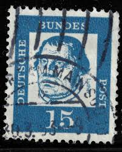 |
| www.ebay.com | vintage stamp MARTIN LUTHER Germany DDR 1961 Religion ... | 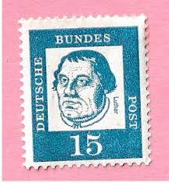 |
| www.etsy.com | Postage Stamp Germany 15 Pfennig 1961 Michel 351 A Cancelled ... | 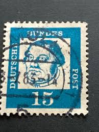 |
| commons.wikimedia.org | File:Deutsche Bundespost - Bedeutende Deutsche - Martin ... | 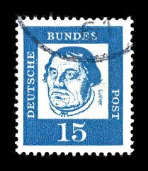 |
| www.ebay.com | Germany RFA BRD Stamp 224, Celebrity, Canceled, VF | eBay | 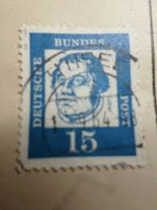 |
| www.amazon.com | Amazon.com: FRD (FR.Germany) 351x Securities Horizontal ... | 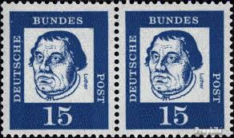 |
| www.hipstamp.com | Martin Luther, 15 Pf, Deutsche Bundes Post (1255-Т) | Europe ... | 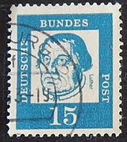 |
| www.etsy.com | Germany Stamp Set Famous People 1961 - Etsy | 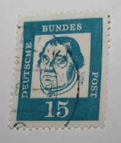 |
| www.dreamstime.com | Saint Petersburg, Russia - April 14, 2020: Postage Stamp ... | 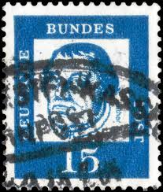 |
| www.old-stamps.com | Luther / Deutsche Bundespost 1961 | 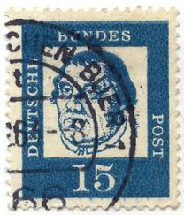 |
| www.flickr.com | beautiful stamp Germany 15 pf. portrait Martin Luther Brie ... | 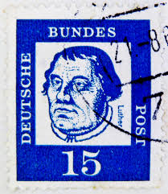 |
| www.shutterstock.com | Istanbul Turkey December 25 2020 German Stock Photo ... | 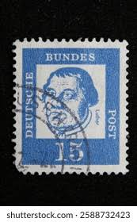 |
| www.kitantik.com | Almanya Pulu - Germany Stamp - Mektup Zarfından Kesilmiş ... | 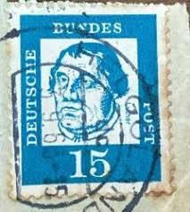 |
| colnect.com | Stamp: Martin Luther (1483-1546), reformer (Germany, Federal ... | 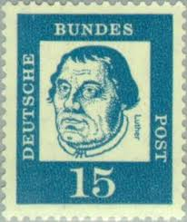 |
| www.hipstamp.com | Germany 828 (used) 15pf Martin Luther, blue (1961) | Europe ... | 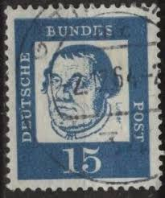 |
| www.ebay.com | Germany 1961 MARTIN LUTHER SC 828 MNH | eBay | 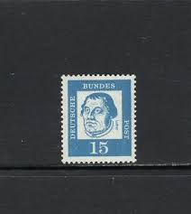 |
| www.shutterstock.com | 4+ Thousand Old Singapore Stamps Royalty-Free Images, Stock ... | 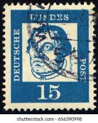 |
| www.alamy.com | West Germany Postage Stamp - Martin Luther (1483-1546 ... | 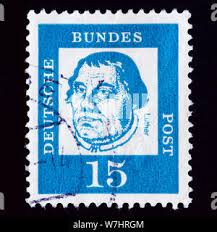 |
| oldthing.de | BRD DS BED. DEUT. Nr 351y gestempelt.. | Briefmarken günstig | 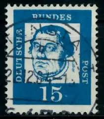 |
| www.kitantik.com | Almanya Pulu - Germany Stamp - Mektup Zarfından Kesilmiş ... | 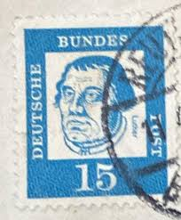 |
| www.dreamstime.com | Postage stamp editorial photo. Image of background, antique ... | 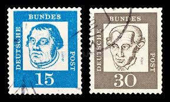 |
| stamp-co.com | Germany Stamps 824-839 Used | Worldwide Stamp Collecting | 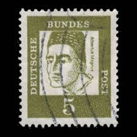 |
| www.briefmarken-muenzen-shop.de | Berlin 1961 Bedeutende Deutsche: Luther 203 W OR Ecke 3 ... | 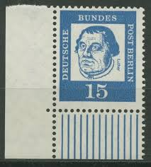 |
| www.osta.ee | Leiunurk 3-457 saksa (207045848) - Osta.ee | 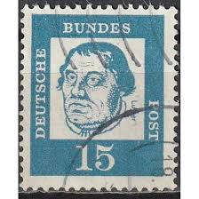 |
| www.todocoleccion.net | alemania federal - 1961 - michel 351** mnh (pap - Compra ... | 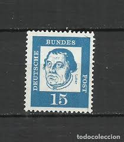 |
| tw.bid.yahoo.com | 1961年德國杰出人物主題郵票一張。都是信銷票。圖案精美，色澤 ... | 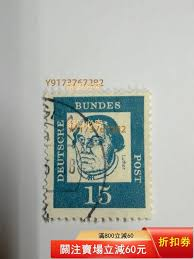 |
| www.kleinanzeigen.de | 2 Luther 15 Pfennig Briefmarken BRD gestempelt stamp used in ... | 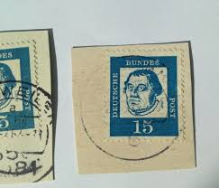 |
| www.amazon.ca | FRD (FR.Germany) 351y DZ with Printing Signs unmounted Mint ... | 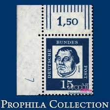 |
| aukro.cz | Německo - reformátor Martin Luther | Aukro | 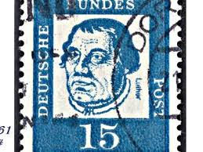 |
| oldthing.de | 13247) BRD Nr.351 y **.. | Briefmarken günstig | 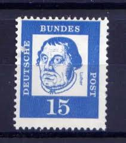 |
| www.kitantik.com | Almanya Pulu - Germany Stamp - Mektup Zarfından Kesilmiş ... | 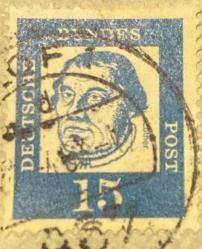 |
| picryl.com | 2 Martin luther on stamps, 1961 deutsche bundespost stamps ... | 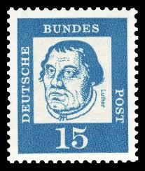 |
| www.hipstamp.com | Search "Martin Luther" / HipStamp |  |
| www.old-stamps.com | Albertus Magnus / Deutsche Bundespost 1961 | 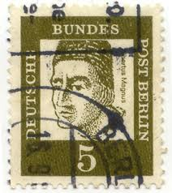 |
| www.todocoleccion.net | alemania federal 1961-64,yvert nº 224, alemanes - Compra ... | 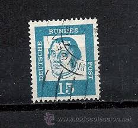 |
| www.ebay.com | 1961, Bundesrepublik Deutschland, 351 x (2), gest. - 2322344 ... | 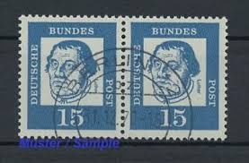 |
| www.alamy.com | Frederick great 1712 1786 king prussia hi-res stock ... | 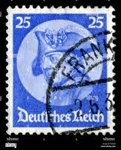 |
| frimarksnetto.se | Tyska Riket 481 stämplat | 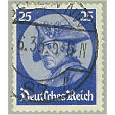 |
| commons.wikimedia.org | File:DBPB 1961 203 Martin Luther.jpg - Wikimedia Commons | 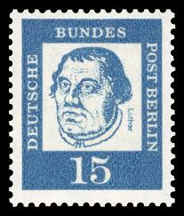 |
| www.mysticstamp.com | Worldwide - Europe - Germany & Colonies - Page 1 - Mystic ... | 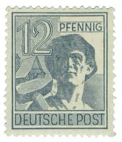 |
| fr.shopping.rakuten.com | Timbre D'allemagne de L'ouest n°224 Y&T 15 P bleu-gris Série ... | 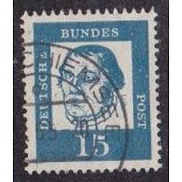 |
| www.istockphoto.com | 10+ Albertus Magnus Stock Photos, Pictures & Royalty-Free ... | 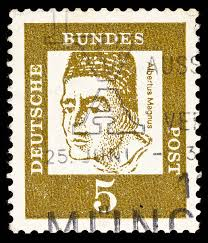 |
| www.reddit.com | German “Kinder-Post” toy stamp alongside two old French ... | 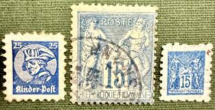 |
| en.wikipedia.org | Postage stamps and postal history of the German colonies ... | 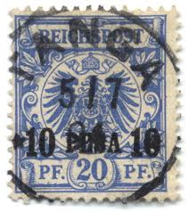 |
| www.ebay.com | Germany Scott # 828b VF MNH 1963 Michel Zusammendrucke K3 w ... | 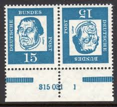 |
| www.mysticstamp.com | 22 - 1857-61 1c Franklin, Blue, Type IIIa, Perf. 15.5 ... | 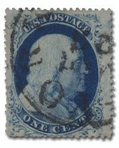 |
| www.kitantik.com | Almanya Pulu - Germany Stamp - Mektup Zarfından Kesilmiş ... | 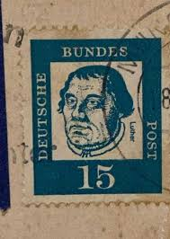 |
| www.facebook.com | What is the identification and value of a 1916 Austria stamp ... | 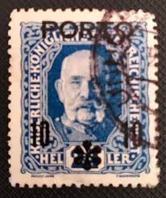 |
| www.istockphoto.com | German Postage Stamps Stock Photo - Download Image Now ... | 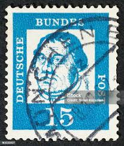 |
| www.stampcommunity.org | 1954 DDR Mi:dd44igXII - Stamp Community Forum |  |
| www.arpinphilately.com | Buy Germany #O37 - Official stamp - Numeral value (1923 ... | 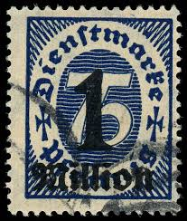 |
| commons.wikimedia.org | File:Deutsche Post 12 pfennig (1948).jpg - Wikimedia Commons | |
| postalmuseum.si.edu | German States | National Postal Museum | |
| www.postbeeld.com | Stamps from Germany, Federal Republic - PostBeeld - Online ... | |
| stampcurio.com | 1851 Austria newspaper stamp blue Mercury II.c type dark ... | |
| www.catawiki.com | German Stamps Auction - Catawiki | |
| www.facebook.com | Collecting old world coins and stamps from 1800s | |
| ycjstamps.com | Stamp | |
| www.linns.com | Austria produced the world's first newspaper stamps | |
| www.germanstamps.net | Richard Wagner Issues | GermanStamps.net |
{kind=link}
{kind=link}
.jpg){kind=link}